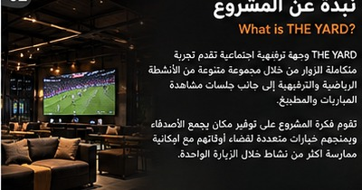
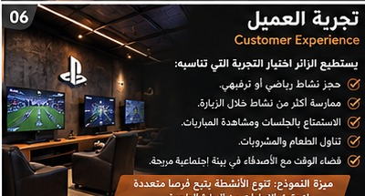
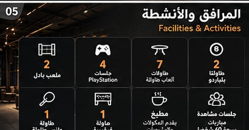
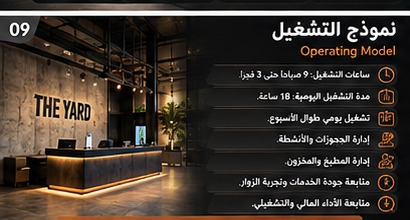

ملخص الفرصة الاستثمارية
THE YARD نادٍ ترفيهي اجتماعي ينوّع مصادر دخله من الأنشطة الرياضية والترفيهية والمطبخ، ويستهدف بناء وجهة يقصدها الأفراد والمجموعات على مدار اليوم.
مفهوم المشروع
مساحة اجتماعية تجمع النشاط والحركة والترفيه ومشاهدة المباريات، مع خيارات متعددة للزوار ومصادر دخل متنوعة للمشروع.
تجربة متكاملة
رياضة، ألعاب تنافسية، جلسات اجتماعية، مشاهدة مباريات، ومطبخ يخدم الزوار.
تنوع مصادر الإيرادات
إيرادات من حجوزات البادل والألعاب والطاولات، إضافة إلى مبيعات المطبخ.
ساعات التشغيل
يوميًا من 9:00 صباحًا حتى 3:00 فجرًا، بإجمالي 18 ساعة تشغيلية.
الزوار المستهدفون
150 زيارة يوميًا في السيناريو المتحفظ، و180 زيارة يوميًا في السيناريو المتفائل.
المساحة وتوزيع المرافق
المستودع / الدور الأرضي
ملعبا البادل، الاستقبال، المطبخ، دورات المياه، جلسات مشاهدة المباريات والجلسات الاجتماعية.
الميزانين / الدور العلوي
منطقة PlayStation، ألعاب الطاولة، البلياردو، الفرفيرة، وتنس الطاولة.
المرافق والأنشطة
توزيع الأنشطة يتيح للزائر اختيار تجربة واحدة أو الجمع بين أكثر من نشاط خلال الزيارة.




البلياردو
طاولتان · 30 ريالًا للساعة للطاولة.
الفرفيرة وتنس الطاولة
طاولة فرفيرة واحدة بسعر 20 ريالًا للساعة، وطاولة تنس طاولة واحدة بسعر 30 ريالًا للساعة.
تفصيل تكلفة التأسيس
إجمالي الاستثمار التأسيسي المعتمد: 1,970,650 ريال سعودي.
| البند | التكلفة (ريال) |
|---|---|
| إنشاء الميزانين | 320,000 |
| تجهيز منطقة PlayStation | 35,600 |
| تجهيز ألعاب الطاولة | 22,500 |
| ألعاب مستقبلية | 11,000 |
| دورات المياه | 40,000 |
| التكييف والتهوية | 280,000 |
| تشطيبات الدور العلوي | 115,000 |
| إضاءة الدور العلوي | 30,000 |
| كهرباء وتمديدات الدور العلوي | 55,000 |
| ملعبا البادل وتجهيزاتهما | 160,000 |
| جلسات مشاهدة المباريات والشاشات | 82,000 |
| الاستقبال | 8,000 |
| تجهيز المطبخ | 145,000 |
| تشطيبات الدور الأرضي | 226,550 |
| إضاءة الدور الأرضي | 30,000 |
| كهرباء وتمديدات الدور الأرضي | 55,000 |
| التراخيص والرسوم | 30,000 |
| كاميرات المراقبة | 20,000 |
| السلامة ومكافحة الحريق | 100,000 |
| اللوحات والهوية | 25,000 |
| معدات النظافة | 3,000 |
| المخزون الأولي | 15,000 |
| التصميم الهندسي | 80,000 |
| الشبكة والإنترنت | 12,000 |
| الكاشير ونظام الحجوزات | 20,000 |
| الأثاث الإداري | 2,000 |
| التسويق قبل الافتتاح | 10,000 |
| الزي الموحد للموظفين | 5,000 |
| الإشراف الهندسي لمدة 3 أشهر | 33,000 |
| إجمالي تكلفة التأسيس | 1,970,650 |
المصروفات التشغيلية الشهرية
| البند | شهريًا (ريال) |
|---|---|
| رواتب الموظفين | 55,000 |
| راتب المؤسس | 15,000 |
| الإيجار | 25,000 |
| الكهرباء والمياه | 16,400 |
| الإنترنت والاتصالات | 500 |
| الصيانة | 3,000 |
| التسويق | 2,000 |
| النظافة والاستهلاك | 1,000 |
| بوابات الدفع والبنوك | 500 |
| البرامج والتراخيص التقنية | 500 |
| الإجمالي الشهري | 118,900 |
التوقعات المالية الشهرية
توقعات شهرية وفق سيناريوهين للتشغيل، مع افتراض أن مشتريات المطبخ تمثل 35% من مبيعاته.
| البيان | متحفظ (ريال) | متفائل (ريال) |
|---|---|---|
| الزيارات اليومية | 150 | 180 |
| الزيارات الشهرية | 4,500 | 5,400 |
| إيرادات الأنشطة | 72,161 | 80,896 |
| إيرادات المطبخ | 120,815 | 144,978 |
| إجمالي الإيرادات | 192,976 | 225,874 |
| مشتريات المطبخ | 42,285 | 50,742 |
| المصروفات التشغيلية | 118,900 | 118,900 |
| الفائض التشغيلي | 31,791 | 56,232 |
العوائد وفترة استرداد رأس المال
وفق هيكل التوزيع المعتمد، يحتفظ المشروع بـ20% من الفائض، وتوزع نسبة 80% المتبقية حسب الملكية. وبذلك تعادل حصة المستثمر 64% من الفائض التشغيلي.
| البيان | متحفظ | متفائل |
|---|---|---|
| الفائض التشغيلي الشهري | 31,791 | 56,232 |
| احتياطي المشروع (20%) | 6,358 | 11,246 |
| المبلغ القابل للتوزيع (80%) | 25,433 | 44,986 |
| حصة المستثمر (80% من الموزع) | 20,346 | 35,988 |
| حصة المؤسس (20% من الموزع) | 5,087 | 8,997 |
| حصة المستثمر السنوية التقريبية | 244,155 | 431,862 |
| فترة استرداد رأس المال | 8.07 سنوات | 4.56 سنوات |
سنوات تقديرية
سنوات تقديرية
هيكل الشراكة والحوكمة
المستثمر
يمول كامل تكلفة التأسيس، ويحصل على 80% من الملكية.
المؤسس
يتولى الإدارة والتشغيل اليومي ضمن الخطة والميزانية المعتمدتين.
| راتب المؤسس | 15,000 ريال شهريًا، ضمن التشغيل ومنفصل عن الأرباح. |
| الاحتياطي | 20% من الفائض التشغيلي للتطوير والاحتياطي. |
| توزيع الأرباح | 80% من الفائض بعد الاحتياطي توزع حسب الملكية. |
| الإدارة اليومية | للمؤسس ضمن الميزانية والخطة والصلاحيات المتفق عليها. |
| القرارات الجوهرية | تخضع للصلاحيات والآلية التي يتفق عليها الطرفان. |
| الملكية والتصفية | لا يتم بيع المشروع أو تغيير الملكية أو التصفية إلا وفق العقد وموافقة الأطراف بحسب ما يتفق عليه. |
| حصة المؤسس | لا تسقط تلقائيًا عند انتهاء دوره الإداري. |
| التمويل الإضافي | لا يوجد التزام تلقائي بتمويل إضافي، ولا تتغير الملكية تلقائيًا بسببه. |
| التقارير | تقارير شهرية للمستثمر وحق الاطلاع على الحسابات والسجلات. |
| فض النزاعات | التفاوض، ثم مستشار مستقل، ثم آلية فض النزاع المنصوص عليها بالعقد. |
خطة التنفيذ
01 · الاعتماد والتعاقد
اعتماد الموقع والمخططات والتعاقدات والتراخيص اللازمة.
02 · الإنشاء والتجهيز
تنفيذ الميزانين والتشطيبات والتكييف والكهرباء وتجهيز الأنشطة.
03 · ما قبل الافتتاح
توظيف الفريق، اختبار الأنظمة والمعدات، تجهيز المخزون والحملة التسويقية.
04 · التشغيل والافتتاح
بدء التشغيل، متابعة مؤشرات الأداء، ومراجعة الإيرادات والتكاليف شهريًا.
الافتراضات والتنبيهات
- الأرقام توقعات تخطيطية وليست ضمانًا للإيرادات أو الأرباح.
- نموذج المطبخ يفترض أن 80% من الزوار يشترون، بمتوسط إنفاق 35 ريالًا للمشتري، وتكلفة مشتريات تعادل 35% من المبيعات.
- الفائض التشغيلي ليس صافي ربح نهائيًا بعد الزكاة والضريبة والإهلاك والتمويل وأي التزامات غير مدرجة.
- مدة الاسترداد مبنية على ثبات الفائض والتوزيعات على مدار السنوات.
- تحتاج التراخيص والاشتراطات والتكاليف النهائية إلى التحقق قبل التنفيذ والتعاقد.